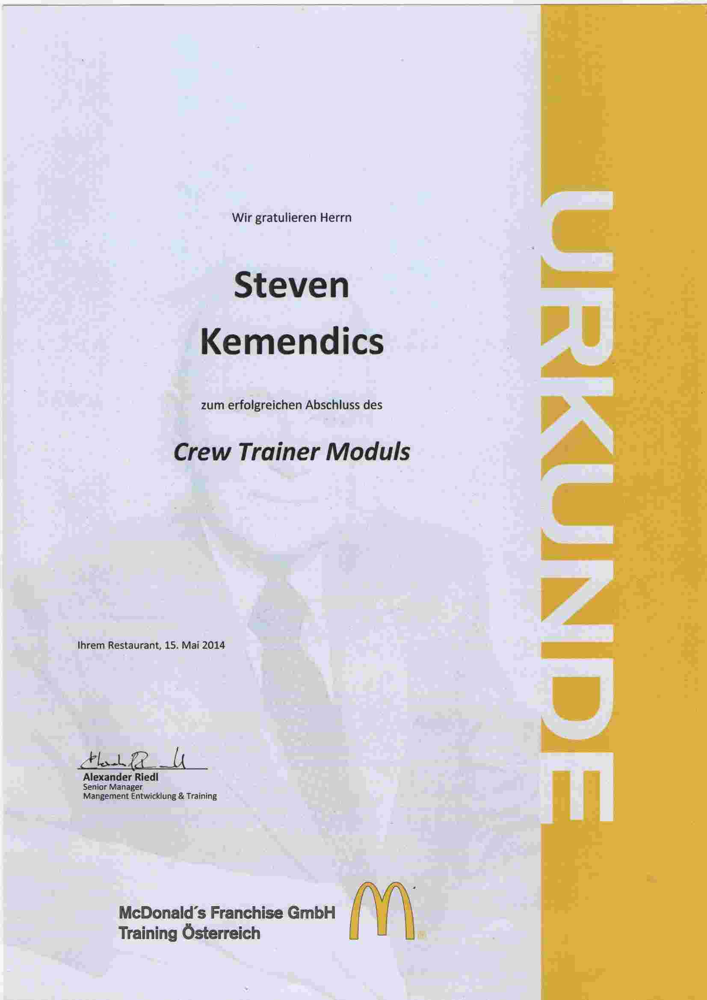

Steven KEMENDICS
Software Developer
Software Developer
E-mail: stevenkemendics@gmail.com
Phone: +43 660 8739016
My first steps into the working world began in the fall of 2009 at McDonald's. Initially, it was intended as a useful way to pass the time until I could begin my two voluntary years of missionary service. About 20 hours of work per week were planned, but within a few months, it became much more. I was trained in the mornings during the first few months by two ladies who, despite their precision and strictness with the important work processes, created a pleasant and friendly work atmosphere. Since I was young and had a lot of free time, I was soon brought into the night shift team. The stories and tales about the night shifts are partly true, as it really had its own flair and rules to work so late.
My tasks included operating the cash register, restocking, and maintaining the checkout area with food and non-food items. During the day, I was an integral part of the drive-thru team. Since I enjoyed working with my team and believed that it was beneficial to give more than what was necessary whenever possible, I quickly became one of the first points of contact when help was needed. As a result, in the last four to six months of my first period working at McDonald's, I was almost working full-time and had nearly 100 hours of overtime, the most by far. Such a large amount of sacrifice is no longer possible today, now that I am older and have a family, but back then, I was young, had the time, and enjoyed working with this team very much. I still remember well how, when I once spontaneously asked for a vacation, the deputy store manager came and said: "Of course, you are always there for us, so I am there for you."
In mid-October 2010, I was finally able to begin my missionary service. Many were sad to see me go, but everyone was also happy for me and what I would be doing in the next two years.
In the winter of 2012, still unsure of what I wanted to do with my life, I returned to McDonald's. I knew I did not want to spend my future at this workplace, but sitting around and doing nothing was not my thing. The joy was great for me and my colleagues. There were many familiar faces and new ones as well. A shift leader from my first time at McDonald's, with whom I had a good relationship, had become the new store manager, and thus the expectations from both sides were clear, and I enjoyed the same respect as before. After a few months, I decided to pursue a carpentry apprenticeship and searched for an apprenticeship position while working full-time. I quickly found an apprenticeship, and everything looked like another farewell at my employer. I worked diligently until the end of June and was able to make many good friends again, some of whom were sad but also happy about my new path in life.
In the summer, I spent five weeks in the United States visiting old friends. When I returned and was full of anticipation for my carpentry apprenticeship, I learned that the company that was supposed to take me on could no longer do so because they would have to pay me more apprentice wages due to my age, and unfortunately, they could not afford it. I wanted to start something new where I could see a happy future for myself, so I began my job search. In mid-September, I unexpectedly received a call from the store manager and a good friend who asked if I could please come back because the employee who opened the morning shift would be out for a few months and they had to fire a shift leader who was supposed to support the morning shift. I was the only one who could seamlessly take over this position quickly. So, I came back for my third stint at McDonald's. All the employees and shift leaders were very happy to see me again, and I enjoyed a special status. I was the only one who did not have to work weekends and always had the same working hours. My opinion was also always highly valued and accepted by the management team.
Nevertheless, I was not really happy there, as I wanted a job that I enjoyed and had career advancement opportunities. The disrespect from customers bothered me. I did an internal training to become a crew trainer and wanted to start an apprenticeship to complete my high school diploma and then study. Unfortunately, the regional manager took care of my apprenticeship too late, so I could not start at the beginning of the apprenticeship year. I felt stuck and became increasingly unhappy with my employer. In the meantime, I had married, and it was clear that unemployment was not an option for me. A friend had recently started working at Interspar, and his store manager was very satisfied with him. Since there is always a high turnover in retail, a position quickly became available, which he recommended to me, and I got the job. During my third stint, I stayed at McDonald's for almost a year, but this time the farewell was final. The farewell was grand because the team was fantastic. In my three previous different workplaces (McDonald's, Interspar, Heinrich Reiter GmbH), I never had such a close-knit team. If you made an effort to do the job right, you were immediately accepted by everyone, and everyone was willing to go the extra mile for each other. Even weeks, months, and even a year or two later, when I visited, I was still asked if I wanted to come back.
Many of my attitudes towards the working world and my skills were deepened during my time at McDonald's. The importance of a supportive team, working hard not just for money, and that a certain willingness to sacrifice is worthwhile.